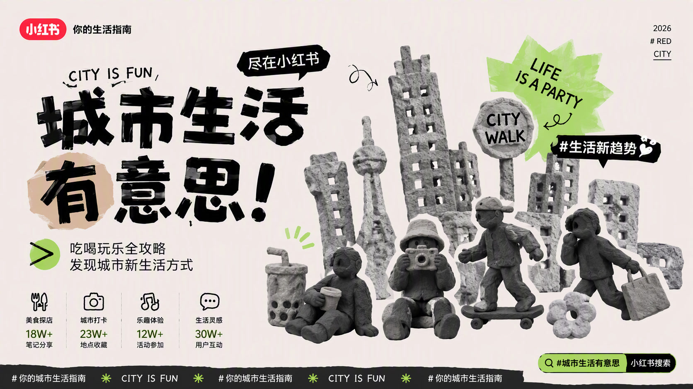
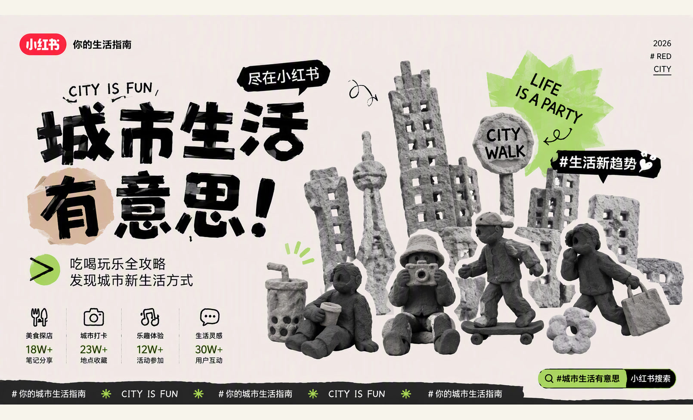
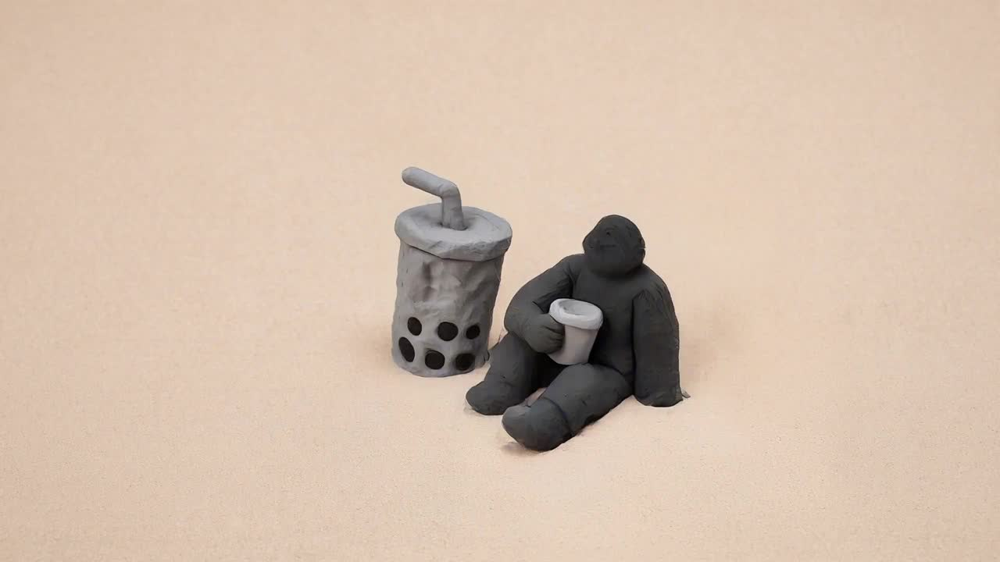
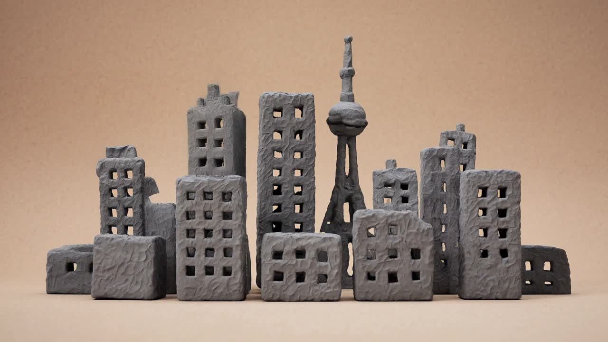
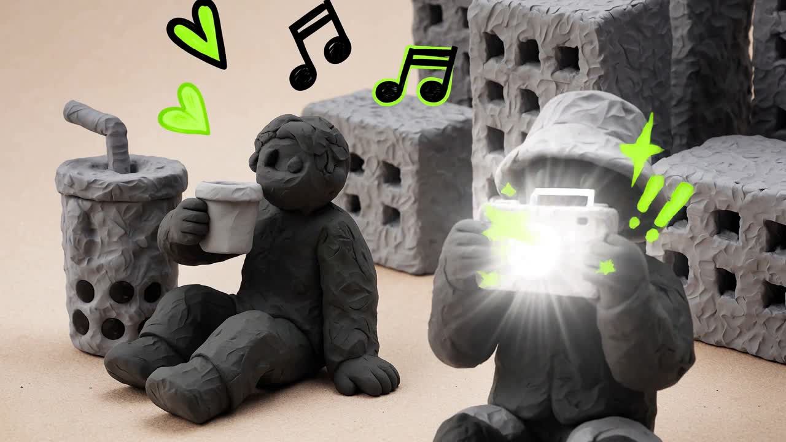
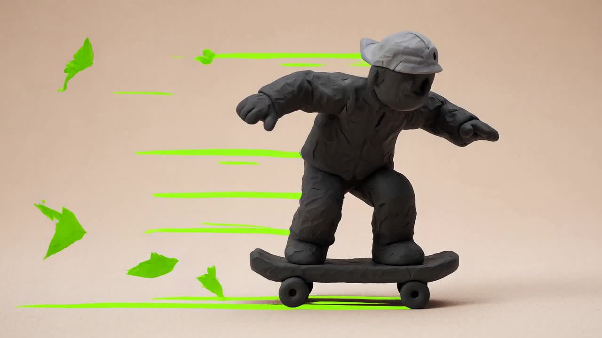
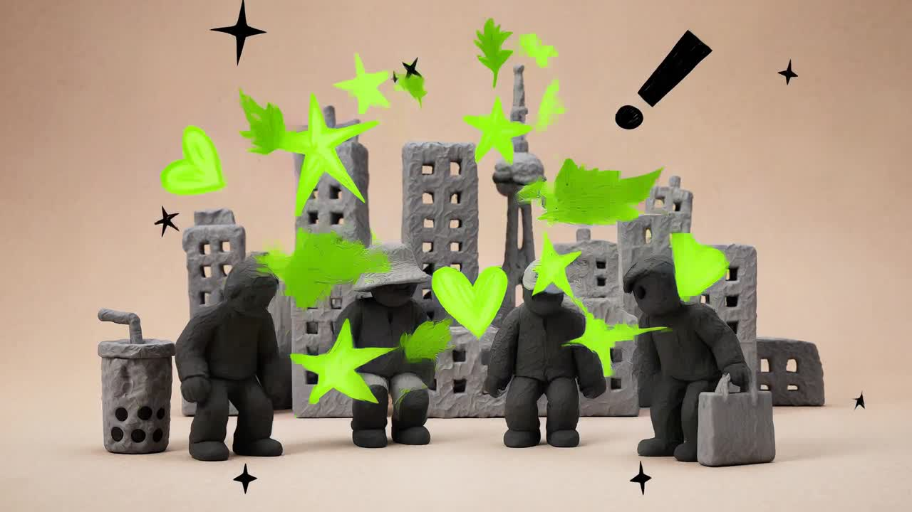
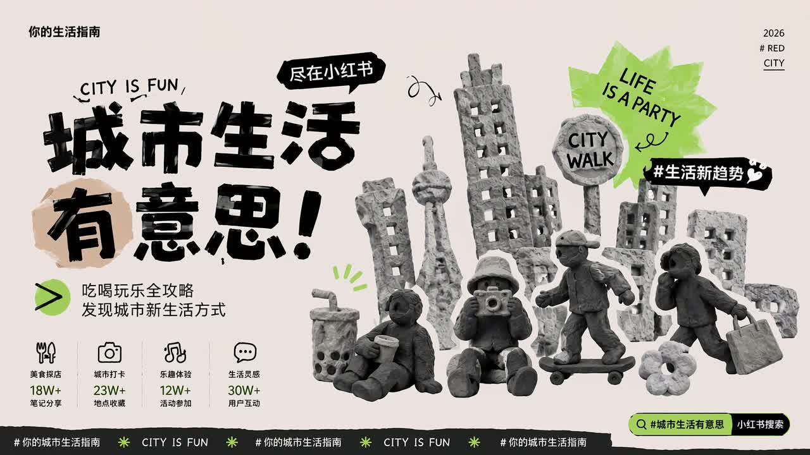

01
Codex前期策划与洞察
- 拆解需求与限制条件
- 提炼用户洞察与核心概念
- 拆解提示词和视觉风格
- 规划 PPT 叙事与交付结构
产出：需求框架 / 创意 / Prompt / 风格 / PPT
多媒体动态设计师 · 设计方案说明 — 董柏辰 / 2026.09

根据拆解后的提示词生成灰阶粘土城市构图、地标建筑与都市角色候选。
结合参考图继续生图，统一角色、手捏材质和奶白灰阶视觉风格。
构图微调与素材合成，文字排版和品牌信息，完成画面细节精修。
基于定稿主视觉，生成建筑生长、角色弹入与标签跳动效果。
重点不只是视觉完成度，更在于概念推导、信息设计与动态流程。
呈现「生活新趋势尽在小红书」
城市吃喝玩乐、打卡探索与真实生活方式
年轻 / 潮流 / 粘土手作 / 小红书品牌感
8–10 秒；包含概念、故事板与过程
标题、Slogan 与小红书 Logo
PPT；主视觉与动态内置
用户不缺选择，而是缺少一眼想去、可以立刻行动的城市灵感
把地标、人物与吃喝玩乐捏成一场可探索的生活派对
用真实笔记降低决策成本，让发现自然转化为城市行动
以清晰层级锁定第一眼记忆
建立探索代入感与派对氛围
把视觉现场接回小红书内容生态

城市派对正在发生 ▮ 10s · 建筑生长 × 角色弹入 × 标签跳动

0.4–1.2s
1.2–2.6s
2.6–4.3s
4.3–6.0s
6.0–8.6s
8.6–10s主视觉闪现后切入奶茶特写，建筑逐步搭成城市舞台
喝奶茶、拍照与滑板接力出现，快门和速度线制造节拍
角色汇入城市，霓虹绿符号爆发，最终压平成品牌海报
系统性的克制
从产品、包装到空间都坚持一致逻辑；优秀来自删去多余后仍保有识别与温度。
让数据变成文化
高饱和色、动态图形和个性化数据共同把产品行为转化为可分享叙事。
让品牌气质先于功能
网站把电影物料当作策展内容，以大图、留白与节奏让品牌气质先于功能。
a24films.com图像优先的编辑结构
图像优先、编辑结构清楚，持续呈现平面、插画、影像与数字艺术的新表达。
itsnicethat.com更快比较视觉方向、镜头与变体
从单点执行转向判断、编排与审核
Codex 可协助批处理、版本整理与交付检查
「城市从不缺灵感，我们要做的是让每一次出发都有新发现。」
寻找最会玩的你董柏辰 · 多媒体设计师
城市派对CITY · LIFE · PARTY